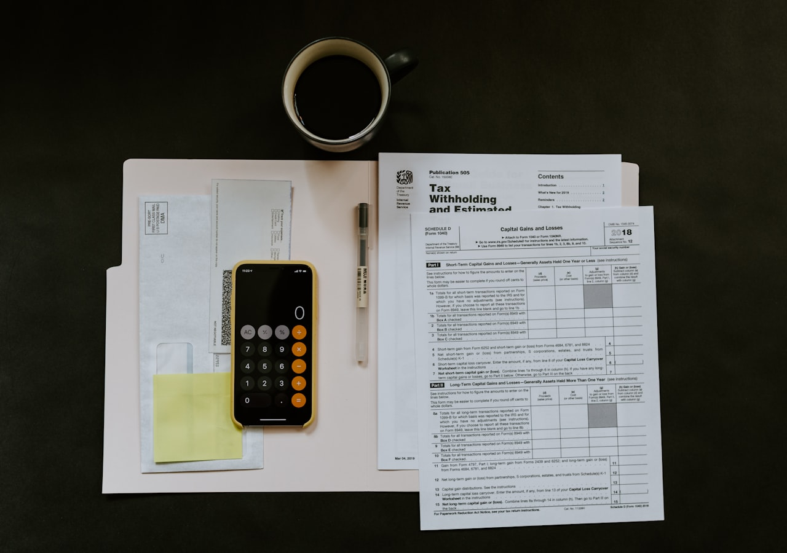

30 秒快速了解：
• 營業額 8 萬元以下：免營業稅（但須登記）。
• 營業額 8 萬 ~ 20 萬元：可申請「免用統一發票」，稅率 1%。
• 營業額 超過 20 萬元：必須開立統一發票，稅率 5%。
（注意：「有限公司」或「股份有限公司」無論營業額多少，都必須開立統一發票。）
• 營業額 8 萬元以下：免營業稅（但須登記）。
• 營業額 8 萬 ~ 20 萬元：可申請「免用統一發票」，稅率 1%。
• 營業額 超過 20 萬元：必須開立統一發票，稅率 5%。
（注意：「有限公司」或「股份有限公司」無論營業額多少，都必須開立統一發票。）

營業稅的 3 個級距與起徵點
在台灣做生意，只要有銷售行為，就必須繳納營業稅。國稅局依據「每月平均銷售額」將營業人分為三個級距：
- 起徵點以下（未達 8 萬）：買賣業銷售額未達 8 萬元，或勞務業（如接案設計）未達 4 萬元，不需要繳納營業稅。
- 小規模營業人（8 萬 ~ 20 萬）：國稅局會「查定」你的營業額，每三個月發一次稅單讓你去繳款，稅率為 1%。
- 使用統一發票（20 萬以上）：必須開立統一發票，每兩個月自行申報一次，稅率為 5%。
申請「免用統一發票」的條件
如果你想省下 5% 的營業稅與會計師記帳費，申請免用統一發票必須「同時滿足」以下條件：
- 組織型態必須是「行號（工作室/企業社）」。如果是「有限公司」或「股份有限公司」，一律強制使用統一發票。
- 每月平均營業額低於 20 萬元。
- 非特定的連鎖或加盟業（有些連鎖飲料店雖然單店營業額低，但因品牌知名度高，國稅局仍會強制要求開發票）。
延伸閱讀：行號 vs 有限公司 vs 股份有限公司，新手怎麼選？
統一發票（購票證）申請流程
如果你的營業額達標，或是你為了接大企業的訂單而成立了公司，就需要申請購買統一發票：
- 國稅局稅籍登記審查：公司設立完成後，負責人需準備身分證、公司大小章與發票章，前往公司所在地的國稅局管區報到，簽名確認營業事實。
- 領取「統一發票購票證」：管區審核通過後，會核發一本像護照一樣的「購票證」。
- 前往代售點購買發票：每到單數月（如 1、3、5月）的下旬，就可以拿著購票證，到農會、信用合作社等代售點購買下兩個月份的空白發票。
該請會計師代買發票嗎？
通常創業者會將記帳、報稅與「代買發票」業務，一起委託給記帳士或會計師事務所處理。雖然每月要支付一筆記帳費（約 2,000~3,000 元），但能避免發票開錯、漏報稅金所產生的天價罰鍰，非常划算。